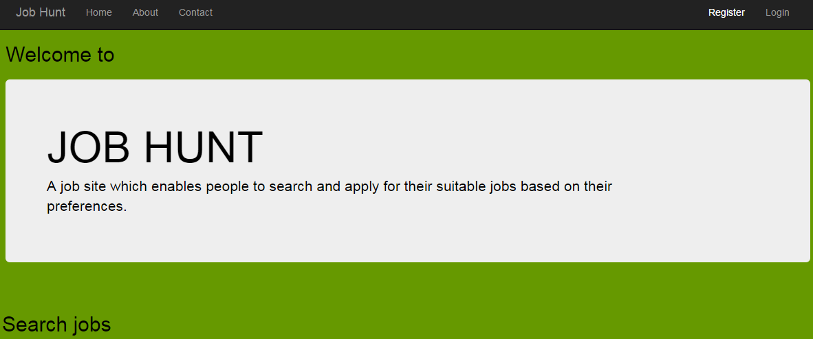
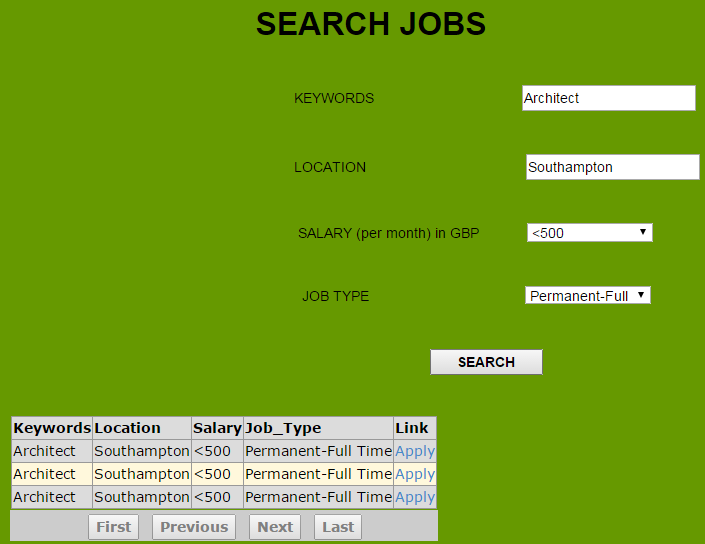

1) In the Home page, a new user can register to the website by clicking on the Register button located on the top bar.
2) If the user has already a registered account, can login to the website by clicking on the Login button on the top bar.
NB: To apply for a job the user must be logged in.
3) A website user can click About on the top bar to see the description of the website.
4) A website user can click Contact on the top bar to contact the website staff.
5) A website user can access the Search page by clicking on the Search>> button situated at the bottom of the page.
NB: At any time, a user can return to the Home page by clicking on either Job Hunt or Home, on the left side of the top bar.
1) In the Search page, a website user can fill the fields to search a job, basing on its own preferences. Once filled each field, a click on the Search button will display the results, if exist, of the search(an example is shown below). If no results are shown, a website guest can make a new search from the same page.
If you click on the "Apply" link of one of the search results it will redirect you to the Apply page.
1) In this page,if the website user is already logged in, it will be shown the success message of the application to the job.
1.a) At this point, the user has the possibility to make a new search and apply for further jobs by clicking on the here link.
1.b) Otherwise,if the user is not logged in, it will be asked to click on the Login link in order to be able to apply for a job.
<